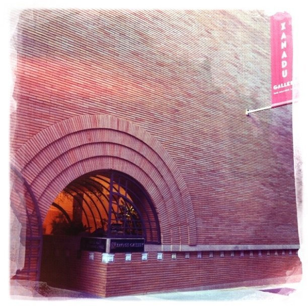

Wed, 02 Mar 2011 10:02:36 · Architecture · San Francisco
v c morris gift shop 1948 on maiden lane san

V. C. Morris gift shop (1948) on Maiden Lane, San Francisco. Designed by Frank L. Wright, Architect of the New York Guggenheim Museum, the interior of this unique red-brick building featured similar element as in the circular stairs of the Guggenheim. This is the last surviving building of Frank L. Wright in San Francisco, and now occupied by Xanadu art gallery.
– Taken with iPhone.